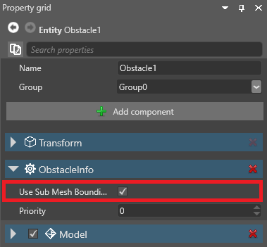
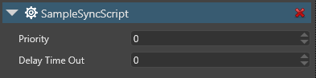
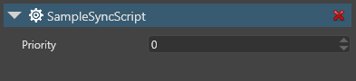

パブリック プロパティとフィールド
初級 プログラマー
スクリプトでパブリック プロパティまたはパブリック フィールドを宣言すると、そのプロパティは Game Studio 内でスクリプト コンポーネント プロパティからアクセスできるようになります。

同じスクリプトを複数のエンティティにアタッチし、エンティティごとに異なるプロパティ値を設定できます。
Note
パブリック プロパティまたはフィールドを Game Studio で使用するには、シリアル化可能である必要があります。
パブリック プロパティまたはフィールドを追加する
次のスクリプトにはパブリック プロパティ (DelayTimeOut) があります。
public class SampleSyncScript : StartupScript
{
// このパブリック メンバーは Game Studio に表示される
public float DelayTimeOut { get; set; }
}
DelayTimeOut プロパティはスクリプト コンポーネントのプロパティに表示されます。

Note
原則として、Game Studio でプロパティまたはフィールドを表示したい場合、ゲッターおよびセッターは可能な限り何も行わないようにする必要があります。たとえば、メソッドを呼び出したり、Stride のランタイム API にアクセスしたりしないようにする必要があります。
たとえば、以下のコードは、実行時にのみ使用できる
Entity.Componentsにアクセスしようとしているため、問題になります。
public class SampleSyncScript : StartupScript { private float delayTimeOut; // このパブリック メンバーは Game Studio に表示される public float DelayTimeOut { get { return delayTimeOut; } set { delayTimeOut = value; Entity.Components.Add(new SkyboxComponent()); } } }このようなコードをプロパティまたはフィールドに組み込む場合は、Game Studio がそれを表示しないように非表示にします (後述を参照)。
プロパティ グリッドでプロパティまたはフィールドを非表示にする
プロパティ グリッドにプロパティを表示したくない場合は、次の方法でできます。
- メンバーを内部またはプライベートとして宣言します
- または、DataMemberIgnore 属性を次のように使用します。
// このパブリック プロパティは Game Studio では使用できない
[DataMemberIgnore]
public float DelayTimeOut { get; set; }
プロパティが表示されなくなります。
